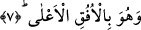

kanatlara) sâhip olması görüşü, hikmete daha uygundur. Bu gibi konuları meleklerle
ilgili sûrenin başlarında daha önceden zikretmiştik. Akıl sâhiplerine bundan öte bir söz
söylemenin anlamı yoktur. Ancak burada, Cibrîl (a.s.)’in -ne az ve ne de çok
olmaksızın- tam altıyüz kanadının bulunuşunu açıklamak gerekmektedir. Ben bu hususta,
ne derin ilim sâhibi âlimlerin kelâmında ve ne de ehl-i hakikatın işâretlerinde bir beyân
elde edemedim.
Allah Teâlâ tarafından ilham yoluyla aklımda dolanan ve bu hususta aşırı bir gayret ve
tefekkürde bulunmadığım fikrime göre Nebî (a.s.) tam fenâ hâline İsrâ gecesindeki
mirâcı ile kavuşmuştur. Bu nedenle gece yürüyüşü yahut mi’râc, bakânın bir görüntüsü
olan gündüz değil, fenânın bir mazharı olan geceleyin vukû bulmuştur. Fenânın
mertebeleri, sonu “el-Kayyûm ve el-Kahhâr” la biten yedi isim mertebesinden
müteşekkildir. Buna işâret etmesi için Mekke’deki Harem-i Şerif’in minareleri yedi
aded yapılmıştır. Zîra bakâ sırrı ancak Nebî (a.s.)’nin Harem-i Şerif’inde tezâhür eder.
Bu nedenle sonları “el-Ahad” ve “es-Samed”le biten on iki isimden son beşine işâret
edilen bakâ mertebelerinin sayısı dolayısıyla Mescid-i Nebevi’nin minareleri beş aded
yapılmıştır. Bu yedi ismin her biri, bütünün birliği açısından esmâ-i hüsnâya kadar ki
tafsilâtiyle yüz aded sayıldığından hepsinin toplamı yediyüze ulaşmaktadır. Şâyet mirâc
gecesinde fenâ’da bulunan Nebî (a.s.) değil de Cibrîl (a.s.) olsaydı, Rasûllullah (s.a.)
ulaştığı Sidre-i Müntehâ’yı geçemezdi. Bu yüzden Cibrîl (a.s.): “Eğer Sidre-i
Müntehâ’ya bir karış daha yaklaşsaydım yanıp kül edilirdim” demiştir. Rasûlullah (s.a.)
ise “Arş” seviyesine kadar geçip bu hususta Cibrîl’den üstünlüğünü ortaya koymuştur.
Böylece Cibrîl (a.s.)’in el-Kayyûm ismine doğru seyri son bulup Nebî (a.s)’nin seyrinin
altında bir konuma gelip ancak kendi bulunduğu makamdan kalplere vahiy getiren bir
varlık hâline dönüşmüştür. Bu yüzden ona “Rûhu’l-Kudüs” adı verilmektedir. Zîra
bedenlerin ruhlarla hayat bulması gibi kalpler de Cibrîl (a.s.)’ın vahyi ile kudsî bir
ruhâniyete bürünüp hayat bulmaktadır. Onun yediyüz kanadından dolayı altı yüz şekil ve
mânâ oluşmakta ve Rasûlullah (s.a.)’ın ism-i Kahhar’a doğru seyri Cibrîl (a.s.)’ın tüm
kanatlarının geride kalması neticesinde son bulmaktadır. Cibrîl (a.s.)’ın yediyüz tâne de
mânevî kanadı vardır.
Netice olarak diyebiliriz ki; nebevî kuvvetin melekî kuvvetten üstün olduğu açıktır.
Zira nebevî kuvvetin kaynağı ilâhî kuvvettir. Bu nedenle Allah Teâlânın “Allah’ın eli
onların ellerinin üstündedir” (el-Feth, 48/10) buyruğu, Cibrîl (a.s.)’ın da bu ellerden
biri olduğuna işâret etmekte ve âyetteki “Allah’ın eli ve kuvveti” ifâdesinden Nebî
(a.s.)’nin eli ve gücünün kasdedilmek istendiği ortaya çıkmaktadır. Sen de bunu böyle
bil ve yakîne ulaşanlardan ol!